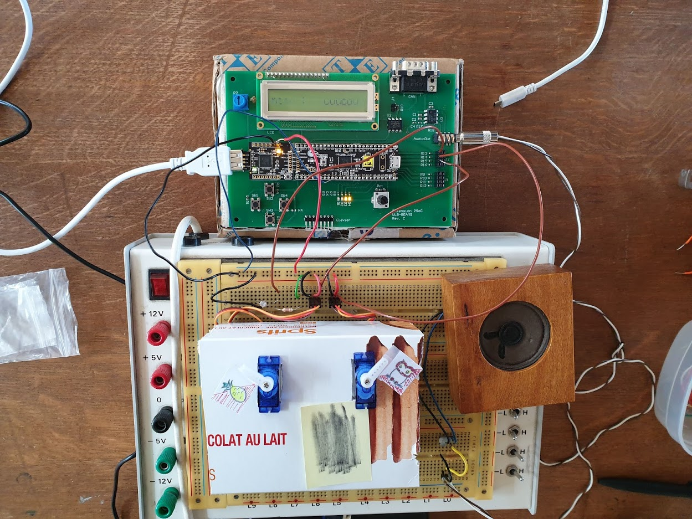
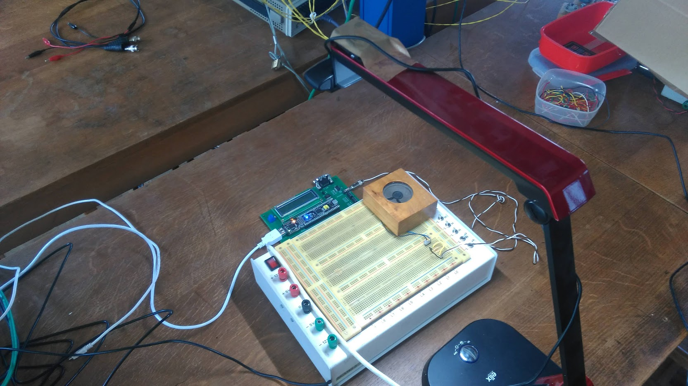
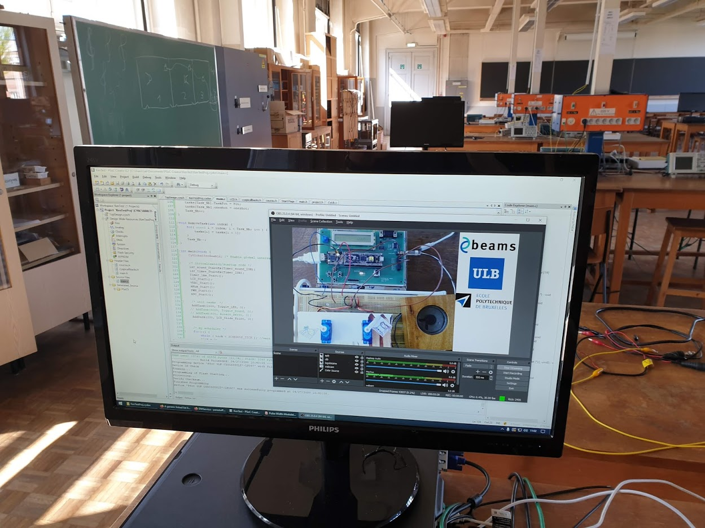

Confinement et enseignement, comment donner laboratoire à distance
Distanciation rime avec adaptation, et ce n’est pas pour rien.
Bien que nous ayons été forcés de changer notre manière de donner cours, ce n’est pas une bonne raison pour abandonner nos étudiants. Leur envoyer un document et leur indiquer d’envoyer un mail s’ils ont une question n’est pas une alternative correcte et l’embrasser comme le Graal revient à se voiler la face. Il y a pourtant quelques outils faciles à mettre en place permettant de garder le contact avec les étudiants.
Plate-forme de discussion
Le premier point essentiel est d’assurer le contact avec les étudiants pendant la séance de travail. À cette fin, il est important de choisir une plate-forme adaptée.
L’ESNU a par exemple pris le parti d’expérimenter avec Adobe Connect, l’ULB ayant acquis une licence. Forte de fonctionnalités permettant la gestion de sous-groupe parmi les participants, cette solution est néanmoins couteûse et limitée à Windows, sans pour autant faire montre d’une meilleure fiabilité.
L’ULB semble avoir fait le choix d’utiliser Teams en tant qu’institution. Si on peut remettre en question ce choix qui semble avoir été fait par défaut plutôt qu’à la suite d’une étude comparative approfondie (tout comme l’adoption de la suite Office365), force est d’admettre qu’une fois ses premiers plâtres essuyés, la plate-forme s’avère riche en fonctionnalités permettant à la fois de donner cours et d’effectuer des entretiens avec les étudiants.
Cependant, c’est Slack qui a été retenu pour le suivi des laboratoires d’électronique analogique, comme présenté à l’occasion du retour de la première semaine de laboratoires à distance. J’y reviens sur les raisons qui ont justifié ce choix et y renvoie tout lecteur intéressé.
Assurer une présence à distance
La plate-forme de discussion est déjà un premier instrument permettant de se reconnecter avec les étudiants, mais disponibilité ne signifie pas présence. La visio-conférence est une bonne solution synchrone, comme le permettent toutes les solutions proposées précédemment. Nombre d’autres solutions existent, comme Google Meet ou Jitsi.
Si l’immédiateté des interactions n’est pas nécessaire ou possible, il est encore possible d’apporter notre présence aux étudiants, par exemple avec de courtes vidéos préparées. Déjà présentée dans un article précédent, la vidéo d’introduction de laboratoire est un moyen simple et efficace de maintenanir cette proximité, malgré la distance.
Proposer des outils de travail adaptés
L’essentiel de nos laboratoires du second quadrimestre se déroulant sur ordinateur, il est possible pour les étudiants de les réaliser chez eux. Néanmoins, même s’il s’agit généralement d’installer un logiciel, encore faut-il qu’ils aient le bon système d’exploitation. À cette fin, nous avons distribué une machine virtuelle comprenant tous les logiciels nécessaires préinstallés : il suffit de télécharger l’image et vous êtes prêt au travail sans rien devoir installer en plus. Malheureusement, faire fonctionner une machine virtuelle demande des ressources conséquentes que tous les étudiants n’ont pas forcément.
Pour ces derniers, il existe une autre solution : le contrôle à distance des ordinateurs du laboratoire. Ce type de manipulation est largement répandu et s’appelle un Virtual Network Computing (VNC). Ce système est implémenté par de nombreuses solution libres et propriétaires. La solution que nous avons retenue est DWService. Parmi ses avantages, on peut compter sa gratuité pour une utilisation limitée, le contrôle par navigateur évitant de devoir installer un logiciel supplémentaire, la facilité de partage des machines et c’est évidemment un projet open source.
Du matériel livré à domicile
Pour d’autres laboratoires, un ordinateur n’est cependant pas suffisant. Il y a quelques années, François Quitin a décroché un Fonds d’Encouragement à l’Enseignement (FEE) afin de proposer des take home labs pour que les étudiants puissent réaliser leur projet d’électronique numérique directement chez eux. Ce financement s’est avéré salvateur pour permettre aux étudiants de poursuivre un enseignement cohérent avec les objectifs du cours : mettre les mains dans le cambouis et réaliser un prototype physique.
Des dizaines de boîtes ont ainsi été expédiées directement à un étudiant de chaque groupe, travaillant ensuite à distance avec leurs collègues. Ce genre d’organisation n’est bien entendu pas réalisable pour tous les cours, mais cet exemple montre que c’est tout de même possible avec de bonnes ressources.
Travailler en laboratoire à distance
Les étudiants ne sont pas les seuls à devoir travailler à distance, les assistants doivent aussi pouvoir se partager du matériel afin notamment de pouvoir répondre aux questions des étudiants à qui on a déjà envoyé tout notre matériel.
Le but est ici de permettre à plusieurs personnes d’interagir avec du matériel électronique à distance, à n’importe quel moment du jour ou de la nuit. Le setup est donc le suivant : le micro-contrôleur et sa carte d’extension verte sont connectés à l’ordinateur et les moteurs, photo-résistance, haut-parleur et autres composants électroniques sont branchés dans un protoboard et sur la carte d’extension.

Une webcam est ensuite accrochée à une lampe de bureau afin de capturer tous les éléments en une seule vue.

Sur l’ordinateur, un simple agent est installé afin de pouvoir en prendre le contrôle à distance à l’aide de DWService présenté plus haut et une instance OBS envoie le flux vidéo vers un serveur de streaming hébergé sur un serveur de Ken Hasselmann, mais pourrait aussi bien l’être sur YouTube. Le contrôle à distance permet ainsi du modifier le code sur le micro-contrôleur sans devoir se déplacer dans le laboratoire et streamer la vidéo permet de procéder à une démonstration sans avoir besoin de se connecter à l’ordinateur.

Un mois plus tard, l’installation fonctionne toujours et a été très utile pour les assistants, comme vous pouvez peut-être encore le voir sur ce lien de streaming mis en place par Ken Hasselmann.